MDBMSC Custom Guide
Hello Everyone! This is a guide treating my experience with charting.
Note Types Class
Normal Notes: Small & Mediums 1/2 [Monster Notes]
Emphasis Notes: Larges 1/2, Raider/Hammer, Gemini
Others: Hold, Gear, Masher, Ghost
Boss Notes: Boss Projectiles 1-2/3, Boss Gear, Boss Melees 1-2, Boss Mashers 1-2
Pickables: Heart, Beam Note
Ranking
Lowest to Highest by Impact Power
Level X: Hold, Gear, Ghost
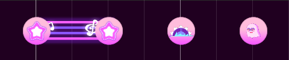
Level 0: Heart, Beam Note
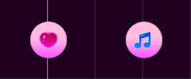
Level 1: Small
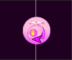
Level 2: Mediums, Projectiles
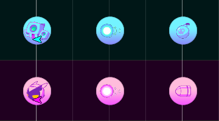
Level 3: Larges
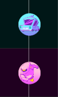
Level 4: Raider(grnd)/Hammer(air)
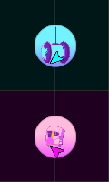
Level 5: Gemini, Raider(air)/Hammer(grnd), Masher, Boss Melees & Mashers
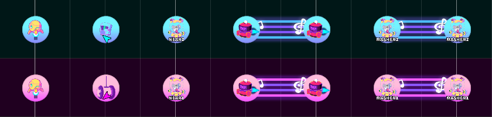
Consider those statements
{Medium 1} {Large 1} {Raider} and {Projectile 2} as married couple Males ♂
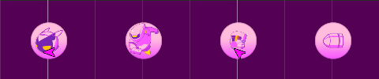
{Medium 2} {Large 2} {Hammer} and {Projectile 3} as married couple Females ♀
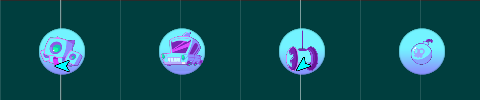
{Small} {Hold} {Projectile 1} {Ghost} {Gemini} {Masher} as assisted Kids Hermaphroditic or Transgender ⚧
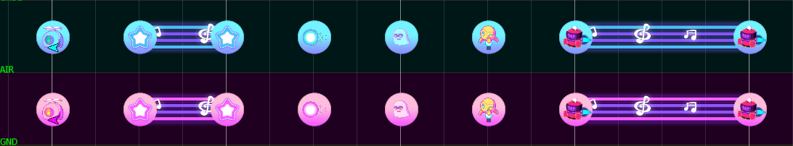
The ground lane should in most cases be a little bit more dominant than the air lane by like 10-15% in term of stuff
I’am gonna use the vertical view which was the only one at the old times from the genesis.
Measure Scale
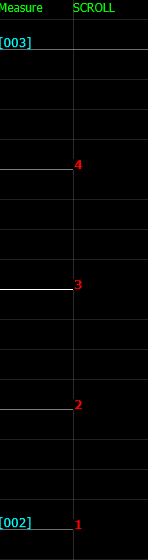
Here is the measure starting with 002 as a tradition when offset, it’s also called a rhythm unit section.
The real time value depends on the BPM like in equations you first need to tell X(BPM) to have Y(Real Time).
In music, the default structure time signature is 4/4.
In simple terms that's the timestamp consistency regarding the repeating cycle of patterns.
1/4 is the first bar (supposed to start at 0/4 and 4/4 to be a new measure but since it is counter-intuitive...)
2/4 is second bar
3/4 is the third bar also called half measure
4/4 is fourth bar
Then it repeats again and again
All of them are highlighted lines and will be called bold bars
Structural Organization
Pair [Linear Laning]
Description: Timestamped bold bars and stable participation of each lane.
Translation{8}:
{4-4}
{2-2-2-2} or
{4-2-2}
{2-2-4}
Notes Variety: 1 to 2
Ground-Air Usage: Equal or Semi-Equal
Impair [Accent Laning]
Description: Heavier note is on 2nd and 4th bars and are put lonely.
Translation{8}:
{2-1-3-1-1} or
{2-1-1-2-1-1}
Note Variety: 2
Ground-Air Usage: Favorist on Passive - Equal on Dynamic
Note that we are talking about the bars on when to change lane and not necessarely on actual beats
We can also multiply the scale of those values by 2.
For example {4-4} can be {8-8} in some extent so that litteraly mean each measure own completely the content.
In the negative multiplication which imply streams impairs values are flawed.
1 can't be 0.5 since we always deal in integer numbers.
the grid is supposed to be 16/4 but i'am talking like it's 8/4 which is more simpler to image lane swap.
So i could write it that way {4-1-3 S} S for stream and {8-8} being {4-4 C} C for complete, entire measure so to speak.
Passive
Difficulty: Easier
Lane Density: Higher, Assembled
Dynamic
Difficulty: Harder
Lane Density: Lower, Scattered
Pair Passive
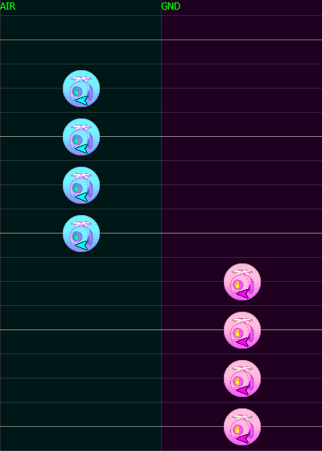
Pair Dynamic
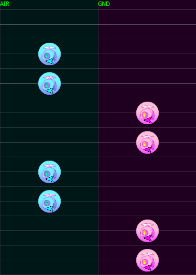
Impair Passive

Impair Dynamic
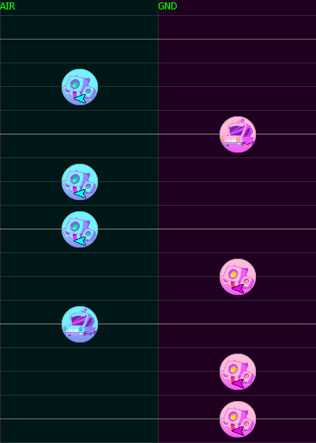
Mirroring
Ctrl+R is a shortcut to reverse the selected stuff ground to air and air to ground.
We know that an impair value result to a lane swap, we can count Impair Passive and Pair Passive-Dynamic/Dynamic Passive have this property.
Polyrhythm
From Easy to Hard
Gears are mostly to use on first or half measures (1/4 & 3/4)
By the way if you can put one on one of these, you're probably right to do so.
The Hold in the air is the default lane for this note although this could be to debate.
Why ? Cuz the main lane is where it's the most active and the current tap notes would mean to be on the ground.
Holds are versatiles and play a major role on each part being different from others as being one of the most creative note cuz they have a unique property, they can signature pretty much all sections but not being mixed up with bad spacing, though they are many type of them.
They are almost always followed by a tap note on the end tail at the opposite lane.
Singular Hold
Fill the little blank, no inherent rules beside the equanimy of lane placement.

Short Hold
Complex tool, not easy to catch at high a BPM.
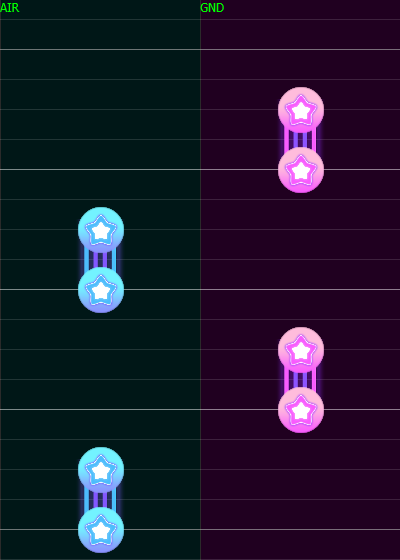
Connected Hold
Alternate main lane, most of the time with consistent length on bold bars but not all the time, the last one may be shorter.
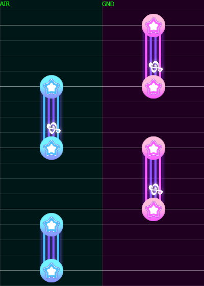
Angular Hold
Emphasis arrangement, also substitute to single gemini at measure start.

Compact Hold
Tighten hold tails on the same lane that combo well with Angular hold.
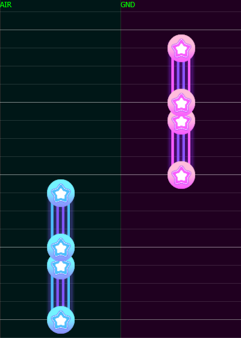
Focus Hold
Keep dominance over a lane.
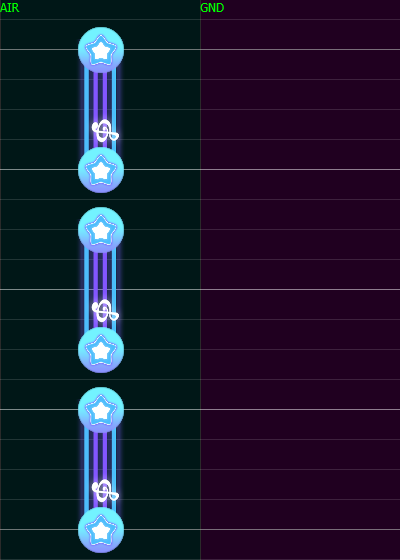
Sandwich Hold
A long one and 2 short ones.
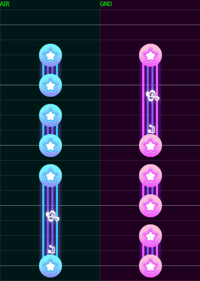
Staircase Hold
Double hold equal in length but with a spicy timing difference, extremely situational and the rarest case.

Gemini Hold
On this arrangement, it adds separative distinction to patterns like geminis but even more with it's spacing.
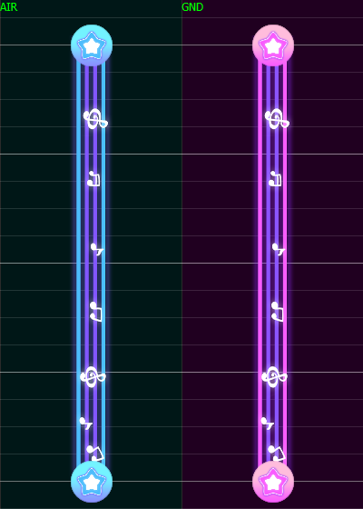
Grids
Grid 12
Grid 16
Grid 24
Grid 32
Consistency
From Easy to Hard
Wombo Combos
Mediums types as a duet can
offer design variation mirroring with possibly an emphasis note as a divider
be divided by lane (transition with usually a masher at the end)
switch with each one a different structure
Larges types as a duet can
swap copypasted (no normal notes)
A Consensus & A Different Point of View
Lanes & Directions
Monsters direction contain a difficulty value at reading!
No Directions
Ease
Cross
The Boss add usually the necessity to "frontal projectile" they appear on the screen late, it's like you don't see them at the border, that's why they are harder to stream than monsters, Monsters are also interesting if u don't want "frontal late appearing notes" but that shouldn't be the main arguement to this decision. They need a little more reflex reading than normal notes
sometimes phase 1 is easier to read than boss phase 2
- Opposite direction of a Monster Note based on his lane
- Raider in the air
- Hammer in the ground
Are the 3 ways of highest energy moving, in charting we must keep the balance with the song interpretation.
aa
Ruling Arrangement
aa
Beginner Errors
Not playing enough the game
Unconventional/wrong grid placement (off sync)
Using holds for a holding sound with no debate on the gameplay consequences